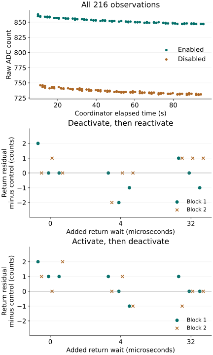

Question and rationale
Does an observation return toward its reference after changing the internal source control and returning it to the reference setting? Does the response depend on independently varied departure and return intervals or preceding source history?
The preceding source-response boot showed large directed changes after source intervention, small unchanged-source differences and downward drift in both observed ranges. This investigation places reference, departure and return observations within one compact SEIGRASM sequence. It tests a local control relation toward physical-state establishment for Seigsit creation; the two source settings remain apparatus controls rather than Seigsit states.
Method and controls
Two blocks cross four paths with all nine combinations of departure and return waits: each wait independently takes 0, 4 or 32 microseconds. The paths are enabled–enabled–enabled, enabled–disabled–enabled, disabled–disabled–disabled and disabled–enabled–disabled. The second block reverses the first block's full ordering. Changed and unchanged paths sharing the same initial source and waits are adjacent. There are 72 conditions and 216 commanded conversions.
Each condition establishes its reference source and waits at least 1,000 microseconds before admitting the stopped ADC on channel 4, zero divider, disabled empty FIFO and disabled interrupts. A sixteen-access native group records a guarded reference conversion, a guarded departure write and wait, an away conversion, a guarded return write and wait, and a return conversion. Each conversion includes command, readiness, RESULT and CS. No SD transaction occurs inside the group. Unchanged paths issue both writes too.
The earlier untriggered RESULT read is omitted and the final FCS check moves to surrounding admission. This accommodates both interventions within the existing compact group while shortening the observation path. Instruction streams remain unchanged; operation descriptors use the existing authored SEIGRASM capabilities. Current and sticky conversion errors are retained, without automatic retries or status replay. Completed failures enter guarded restoration.
The RP1 specification and pinned register reference identify the internal source, channel 4 and TS_EN. Disabled-source potential is unspecified. Raw counts are not calibrated voltage or temperature. Acquisition calls no firmware service; entry firmware, processor execution, SD transport and retained bridge configuration remain apparatus dependencies.
Assessment fixed before return
Inspect identity, completeness, source readbacks, command order, readiness, errors, surrounding controls and restoration. Preserve all observations, including incomplete conditions. For each changed path, compare away-minus-reference and return-minus-reference with its adjacent unchanged-source control under the same waits and block. Compare independent departure and return delays using actual timing bounds, then compare reversed blocks. No response sign, exact return equality or minimum magnitude was required.
Source-write-to-command bounds are [command start − write end, command end − write start]. Departure-to-return bounds use the corresponding two write intervals. These bracket interface actions, not internal analog conversion instants. A single return observation cannot reconstruct a settling curve or independently establish analog conversion freshness.
Preparation and acquisition
Preparation 2019FD4D3265 passed 48 image-bound supplied-response checks. Its 30 inputs and protocol were frozen before installation; 4,096 chunks and two full image readbacks were verified. The prescribed allowance was three minutes. The returned coordinator interval is 99.132912 seconds, excluding entry loading and the terminal record's write/readback. Total powered duration is not independently measured by the capture.
Results
All 2,536 records, 457 operations, 72 conditions and 216 commanded observations completed. All 144 source-control readbacks matched. There were no reported current or sticky conversion errors and no admission failures. Each changed path departed strongly from its reference and returned close to it.
| Source path | Away − reference | Return − reference |
|---|---|---|
| Enabled unchanged | −3 to +1 | −3 to +2 |
| Deactivate and return | −118 to −113 | −1 to +1 |
| Disabled unchanged | −1 to +3 | 0 to +3 |
| Activate and return | +116 to +119 | 0 to +3 |
Subtracting the matched unchanged-source difference gives departure contrasts of −118 to −111 for deactivation and +114 to +118 for activation. Corresponding return contrasts are −2 to +2 and −1 to +2 counts. Thus the approximately 116-count departure does not persist as a large return residual at the observed intervals.

Small return residual
For disabled–enabled–disabled paths, the control-adjusted return residual has median +1 count at zero added return wait, then 0 at both 4 and 32 microseconds. The same medians occur separately in both reversed blocks. There are six comparisons per delay, three in each block.
| Added return wait (µs) | Range | Median | Block medians |
|---|---|---|---|
| 0 | 0 to +2 | +1 | +1 / +1 |
| 4 | −1 to +1 | 0 | 0 / 0 |
| 32 | −1 to +1 | 0 | 0 / 0 |
Inference: this small delay-associated residual is consistent with short-lived history in the source or acquisition path, but the observed ranges overlap and only two blocks were acquired. Quantization, readout variation, ordering and other unmeasured effects remain alternatives. It is not a demonstrated settling constant or identified physical mechanism. The reverse path does not show the same monotonic median pattern.
Timing and drift
| Added wait | Departure observation | Return observation |
|---|---|---|
| 0 | 3.500–7.926 | 3.519–7.889 |
| 4 | 7.019–11.611 | 7.093–11.556 |
| 32 | 35.111–39.519 | 34.926–39.426 |
Departure-to-return write bounds span 15.204–53.111 microseconds. That duration includes the away acquisition; it is not equal to the requested departure wait. The counter frequency is 54 MHz in every recorded access.
The 108 enabled-source readings span 847–863 counts and the 108 disabled-source readings 730–746. Reference medians fall from 854.5 to 848.5 between blocks for the enabled source and from 737.5 to 732 for the disabled source, with 18 references per setting and block. The short local contrasts remain small despite this slower drift. Its cause is unmeasured.
Individual conditions
Condition numbers are one-based. Wait columns give requested departure / return microseconds; observations are raw counts. Each changed path has a neighbouring unchanged-source control with the same delays and initial source.
Enabled unchanged · 18 conditions
| Case / block | Waits (µs) | Ref. | Away | Return |
|---|---|---|---|---|
| 1 / 1 | 0 / 0 | 863 | 860 | 860 |
| 5 / 1 | 0 / 4 | 859 | 859 | 858 |
| 9 / 1 | 0 / 32 | 857 | 857 | 857 |
| 13 / 1 | 4 / 0 | 856 | 856 | 856 |
| 17 / 1 | 4 / 4 | 854 | 855 | 856 |
| 21 / 1 | 4 / 32 | 854 | 855 | 854 |
| 25 / 1 | 32 / 0 | 853 | 853 | 853 |
| 29 / 1 | 32 / 4 | 853 | 853 | 853 |
| 33 / 1 | 32 / 32 | 851 | 852 | 852 |
| 40 / 2 | 32 / 32 | 851 | 850 | 850 |
| 44 / 2 | 32 / 4 | 850 | 850 | 850 |
| 48 / 2 | 32 / 0 | 850 | 849 | 850 |
| 52 / 2 | 4 / 32 | 849 | 849 | 849 |
| 56 / 2 | 4 / 4 | 848 | 849 | 848 |
| 60 / 2 | 4 / 0 | 848 | 848 | 848 |
| 64 / 2 | 0 / 32 | 848 | 848 | 847 |
| 68 / 2 | 0 / 4 | 847 | 847 | 848 |
| 72 / 2 | 0 / 0 | 847 | 847 | 847 |
Deactivate and return · 18 conditions
| Case / block | Waits (µs) | Ref. | Away | Return |
|---|---|---|---|---|
| 2 / 1 | 0 / 0 | 860 | 746 | 859 |
| 6 / 1 | 0 / 4 | 859 | 741 | 858 |
| 10 / 1 | 0 / 32 | 856 | 743 | 857 |
| 14 / 1 | 4 / 0 | 856 | 741 | 856 |
| 18 / 1 | 4 / 4 | 855 | 740 | 855 |
| 22 / 1 | 4 / 32 | 854 | 739 | 854 |
| 26 / 1 | 32 / 0 | 853 | 738 | 853 |
| 30 / 1 | 32 / 4 | 853 | 737 | 852 |
| 34 / 1 | 32 / 32 | 852 | 735 | 852 |
| 39 / 2 | 32 / 32 | 851 | 735 | 851 |
| 43 / 2 | 32 / 4 | 850 | 735 | 850 |
| 47 / 2 | 32 / 0 | 849 | 734 | 849 |
| 51 / 2 | 4 / 32 | 849 | 734 | 850 |
| 55 / 2 | 4 / 4 | 849 | 733 | 849 |
| 59 / 2 | 4 / 0 | 848 | 733 | 849 |
| 63 / 2 | 0 / 32 | 847 | 732 | 847 |
| 67 / 2 | 0 / 4 | 848 | 732 | 847 |
| 71 / 2 | 0 / 0 | 847 | 731 | 847 |
Disabled unchanged · 18 conditions
| Case / block | Waits (µs) | Ref. | Away | Return |
|---|---|---|---|---|
| 3 / 1 | 0 / 0 | 743 | 746 | 744 |
| 7 / 1 | 0 / 4 | 742 | 743 | 743 |
| 11 / 1 | 0 / 32 | 741 | 741 | 741 |
| 15 / 1 | 4 / 0 | 740 | 740 | 740 |
| 19 / 1 | 4 / 4 | 738 | 739 | 741 |
| 23 / 1 | 4 / 32 | 737 | 739 | 738 |
| 27 / 1 | 32 / 0 | 737 | 737 | 738 |
| 31 / 1 | 32 / 4 | 735 | 737 | 737 |
| 35 / 1 | 32 / 32 | 736 | 735 | 736 |
| 38 / 2 | 32 / 32 | 734 | 735 | 735 |
| 42 / 2 | 32 / 4 | 734 | 735 | 736 |
| 46 / 2 | 32 / 0 | 733 | 734 | 734 |
| 50 / 2 | 4 / 32 | 732 | 734 | 733 |
| 54 / 2 | 4 / 4 | 732 | 733 | 733 |
| 58 / 2 | 4 / 0 | 732 | 732 | 732 |
| 62 / 2 | 0 / 32 | 731 | 732 | 732 |
| 66 / 2 | 0 / 4 | 731 | 732 | 733 |
| 70 / 2 | 0 / 0 | 730 | 731 | 731 |
Activate and return · 18 conditions
| Case / block | Waits (µs) | Ref. | Away | Return |
|---|---|---|---|---|
| 4 / 1 | 0 / 0 | 742 | 859 | 745 |
| 8 / 1 | 0 / 4 | 741 | 857 | 743 |
| 12 / 1 | 0 / 32 | 740 | 857 | 741 |
| 16 / 1 | 4 / 0 | 739 | 856 | 740 |
| 20 / 1 | 4 / 4 | 737 | 855 | 740 |
| 24 / 1 | 4 / 32 | 737 | 854 | 738 |
| 28 / 1 | 32 / 0 | 736 | 852 | 738 |
| 32 / 1 | 32 / 4 | 736 | 852 | 737 |
| 36 / 1 | 32 / 32 | 735 | 851 | 735 |
| 37 / 2 | 32 / 32 | 734 | 852 | 735 |
| 41 / 2 | 32 / 4 | 734 | 851 | 735 |
| 45 / 2 | 32 / 0 | 733 | 850 | 736 |
| 49 / 2 | 4 / 32 | 733 | 849 | 734 |
| 53 / 2 | 4 / 4 | 731 | 850 | 733 |
| 57 / 2 | 4 / 0 | 732 | 848 | 732 |
| 61 / 2 | 0 / 32 | 731 | 847 | 731 |
| 65 / 2 | 0 / 4 | 730 | 848 | 732 |
| 69 / 2 | 0 / 0 | 730 | 847 | 732 |
Matched-control comparisons
Each entry preserves the changed condition and its specific control. The reported contrasts subtract the control's local difference from the changed path's local difference.
Deactivate and return · 18 comparisons
| Case / control | Waits (µs) | Away contrast | Return contrast |
|---|---|---|---|
| 2 / 1 | 0 / 0 | -111 | +2 |
| 6 / 5 | 0 / 4 | -118 | +0 |
| 10 / 9 | 0 / 32 | -113 | +1 |
| 14 / 13 | 4 / 0 | -115 | +0 |
| 18 / 17 | 4 / 4 | -116 | -2 |
| 22 / 21 | 4 / 32 | -116 | +0 |
| 26 / 25 | 32 / 0 | -115 | +0 |
| 30 / 29 | 32 / 4 | -116 | -1 |
| 34 / 33 | 32 / 32 | -118 | -1 |
| 39 / 40 | 32 / 32 | -115 | +1 |
| 43 / 44 | 32 / 4 | -115 | +0 |
| 47 / 48 | 32 / 0 | -114 | +0 |
| 51 / 52 | 4 / 32 | -115 | +1 |
| 55 / 56 | 4 / 4 | -117 | +0 |
| 59 / 60 | 4 / 0 | -115 | +1 |
| 63 / 64 | 0 / 32 | -115 | +1 |
| 67 / 68 | 0 / 4 | -116 | -2 |
| 71 / 72 | 0 / 0 | -116 | +0 |
Activate and return · 18 comparisons
| Case / control | Waits (µs) | Away contrast | Return contrast |
|---|---|---|---|
| 4 / 3 | 0 / 0 | +114 | +2 |
| 8 / 7 | 0 / 4 | +115 | +1 |
| 12 / 11 | 0 / 32 | +117 | +1 |
| 16 / 15 | 4 / 0 | +117 | +1 |
| 20 / 19 | 4 / 4 | +117 | +0 |
| 24 / 23 | 4 / 32 | +115 | +0 |
| 28 / 27 | 32 / 0 | +116 | +1 |
| 32 / 31 | 32 / 4 | +114 | -1 |
| 36 / 35 | 32 / 32 | +117 | +0 |
| 37 / 38 | 32 / 32 | +117 | +0 |
| 41 / 42 | 32 / 4 | +116 | -1 |
| 45 / 46 | 32 / 0 | +116 | +2 |
| 49 / 50 | 4 / 32 | +114 | +0 |
| 53 / 54 | 4 / 4 | +118 | +1 |
| 57 / 58 | 4 / 0 | +116 | +0 |
| 61 / 62 | 0 / 32 | +115 | -1 |
| 65 / 66 | 0 / 4 | +117 | +0 |
| 69 / 70 | 0 / 0 | +116 | +1 |
Interpretation and next question
The source-control relation is locally reversible at the observed resolution in this boot. Large departure differences recur in both directions while return differences lie close to the unchanged controls. This narrows the question from whether the selected source can be controlled to what small history-dependent response remains after the return.
The subsequent return-delay and acquisition-order investigation implements this comparison. Its rationale was to hold departure timing fixed and repeat the disabled–enabled–disabled path against disabled-unchanged controls while varying the earliest return delays more finely. Reversing pair order across repeated blocks would test whether the +1-count immediate residual follows elapsed return time or acquisition order. This targets the observed small residual; it does not assume that a delay will remove it or that its cause is already known.
Six distinguishable, maintainable electrical states and physical Seigsit creation/transfer remain open. The internal source controls are not assigned Seigsit meanings. The analog node is not independently instrumented, so this return does not establish analog conversion freshness, replace component firmware or qualify another silicon cluster.
Integrity, restoration and provenance
Restoration records ADC control and divider zero, disabled interrupts, empty FIFO and clock control zero, with clock divider/select retained at 1. Partition table, geometry and both boot files match preparation; FAT copies agree. Seven sectors outside the journal differ, including System Volume Information. Their writer and timing are not established.
Two read-only captures agree. Capture SHA-256: 2db6acbc8346725b87273e31ee9a6726a57825e5b51ed2750446b937769e1f24. Image SHA-256: f28f3c9974148a015cf335462fa2413dfcb5193804f804bed1a0c0ce5c2f4db7. Independent checks reconstruct raw senary fields, record integrity, both source writes, commands, returned values and interval bounds. Unused journal reservations match preparation.